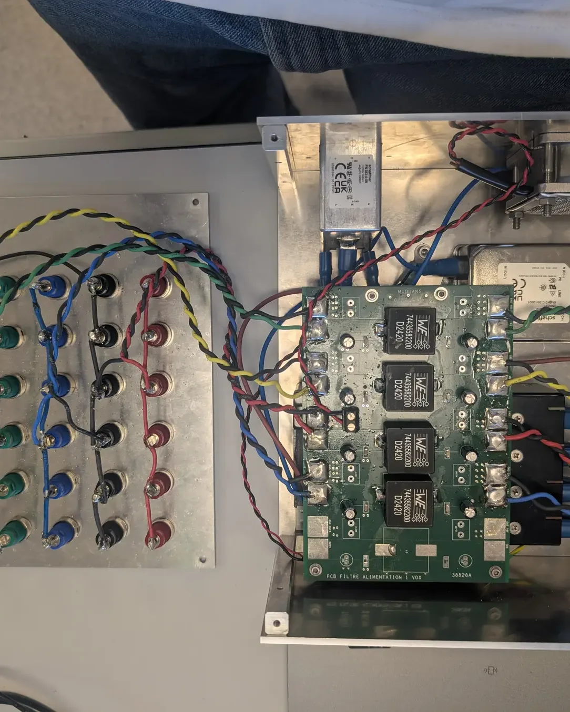

C1
Concevoir
Concevoir la partie matérielle et logicielle de systèmes embarqués, de l’étude du besoin jusqu’à la production : schématique, routage PCB, programmation bas niveau.
Étudiant en 3e année de BUT GEII, parcours Électronique et Systèmes Embarqués, à l’IUT de Bordeaux. Je conçois, je mesure et je fiabilise des systèmes électroniques, du schéma KiCad jusqu’au banc de test.
Bachelier à Dakar, formé à Rouen puis à Bordeaux. Je conçois des cartes électroniques, je mesure des signaux et je fiabilise des systèmes — de la schématique jusqu’au banc de test.

Actuellement en 3e année de BUT GEII (parcours ESE) à l’IUT de Bordeaux, je recherche une alternance pour ensuite travailler en tant que technicien en CDI après mon BUT. Mobile dans toute la France.
Électronique de précision, RF, systèmes embarqués, automatisme et données. Une sélection de ce que j’ai conçu, mesuré et livré pendant mon BUT. Cliquez sur un projet pour l’explorer.
→ faites défiler
et encore
l’index complet ↓Les trois compétences du BUT GEII, et les projets qui les prouvent.
Concevoir la partie matérielle et logicielle de systèmes embarqués, de l’étude du besoin jusqu’à la production : schématique, routage PCB, programmation bas niveau.
Mesurer, caractériser et valider des systèmes électroniques avec des instruments de mesure avancés, puis en certifier la conformité.
Assurer le cycle de vie des systèmes : diagnostic, rétro-ingénierie, dépannage et amélioration continue.
Je ne m’arrête pas au routage : je fabrique mes cartes moi-même, de l’insolation à la gravure, puis je perce, je soude et je valide la carte sous tension.
Une porteuse, un signal modulant, et deux façons de lire le résultat : l’enveloppe à l’oscilloscope, puis la porteuse et ses raies latérales en FFT.
voir le TP modulationEn TP, j’ai administré une base MariaDB sur un serveur Debian, retrouvé par ingénierie inverse le modèle de la base Northwind, écrit des requêtes avec jointures, agrégats et vues, puis développé un menu Python qui interroge la base.
ouvrir le projetDes certifications officielles qui valident ce que je pratique : la radio, les langues et le numérique.
à l’honneur · licence radio
Équivalent HAREC (Recommandation CEPT T/R 61-02) : examen réussi conformément au règlement de l’Union internationale des télécommunications.
document officiel · ANFRdate et lieu de naissance masqués
Certificat de compétences en langues de l’enseignement supérieur, délivré par l’IUT de Rouen : niveau B1 du cadre européen (CECRL).
Certification nationale des compétences numériques. Identifiant P-THBKVQYR
IUT de Bordeaux
Électronique et Systèmes Embarqués : RF, microcontrôleurs, informatique industrielle, bases de données.
IUT de Rouen
Électronique, électrotechnique et automatisme ; premières SAÉ de conception de cartes et de VHDL.
Lycée Issa Laye, Dakar, Sénégal
Mention Bien.
Exail Quantum Systems, Gradignan
Production de sept alimentations bas bruit ±6 V / ±18 V pour les bancs de test des systèmes laser, puis intégration et validation d’un synthétiseur de fréquence AOM à base de DDS piloté par une Raspberry Pi.
CROUS Bordeaux Aquitaine
Rotation entre les postes du restaurant universitaire : plonge, scramble, service, rangement, caisse.
COP1 Bordeaux
Distribution et organisation de la communication au sein de l’association.
voir en images →Restaurant La Chaumière, Quettehou
Entrées et desserts pendant le service, inventaire des stocks, surveillance de la chaîne du froid.
Auchan, Dakar, Sénégal
Tenue de caisse et mise en rayon en période de faible affluence.
Depuis décembre 2025, je suis bénévole chez COP1 – Solidarités Étudiantes, à Bordeaux : des distributions alimentaires gratuites, organisées par et pour les étudiants.
Par et pour les étudiants.
COP1 – Solidarités ÉtudiantesInstaller les stands et préparer les cagettes de fruits et légumes avant l’ouverture.
Accueillir les étudiants et tenir les stands pendant toute la distribution.
Organiser la communication de l’association pour faire connaître les distributions.
Le mannequinat est l’autre facette de ma personnalité : une façon de m’exprimer par la posture, le regard et le style.
La version imprimable de ce portfolio : formations, projets de SAÉ, stage chez Exail et, nouveauté de BUT 3, les bases de données (SQL & Python).
Une alternance en électronique, en systèmes embarqués ou en RF ? Je suis mobile dans toute la France et disponible pour en parler.